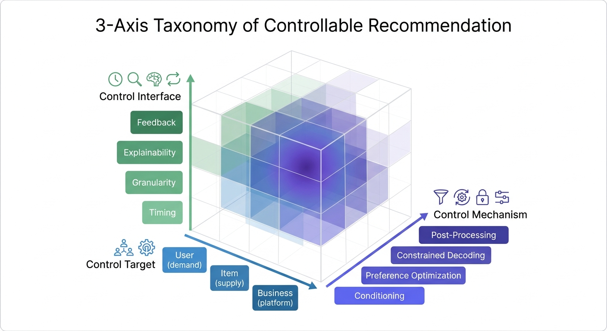
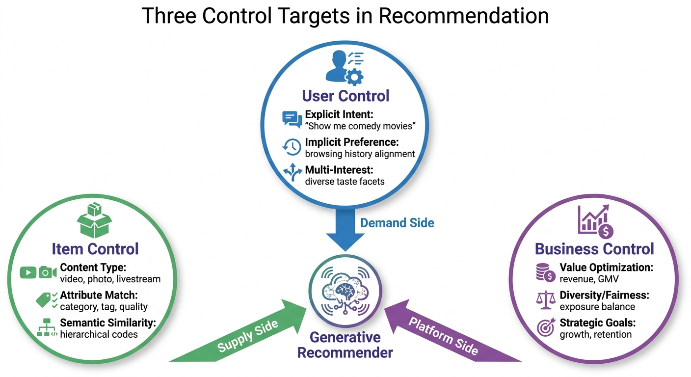
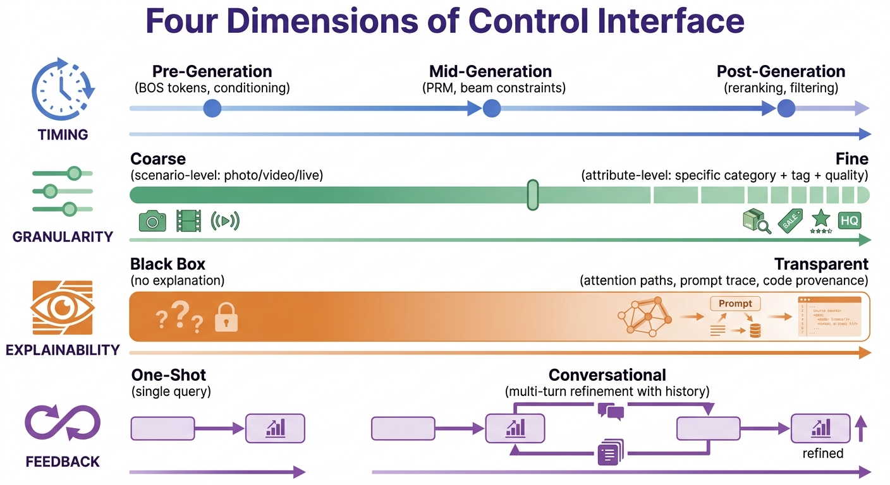
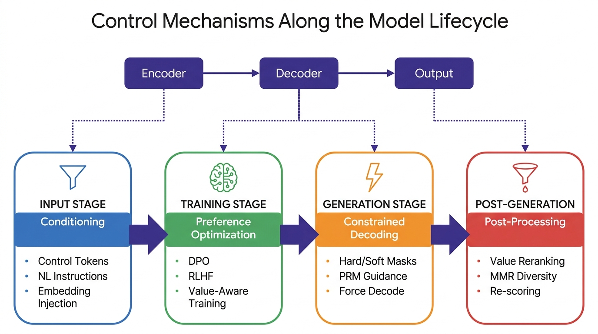
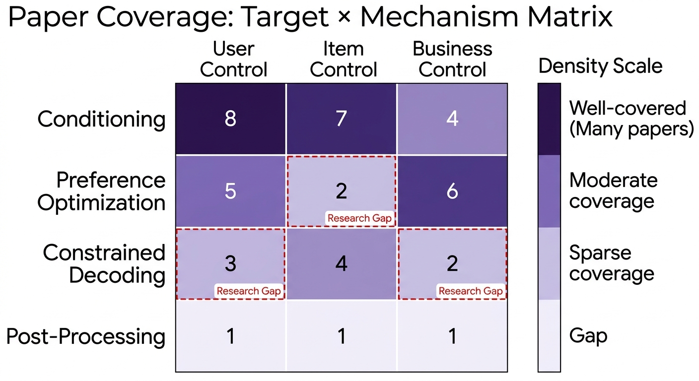
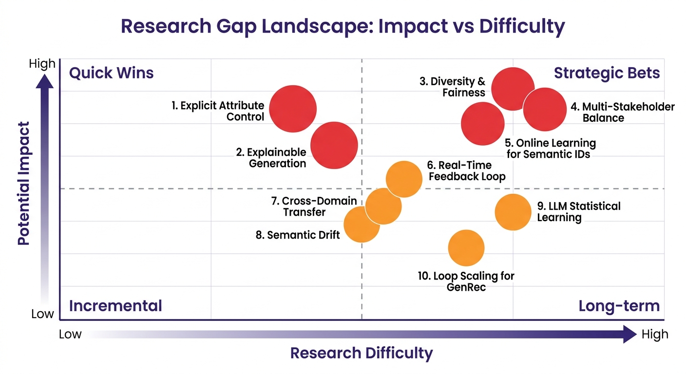

Direction Thesis
Why controllability is THE bottleneck for generative recommendation — not generation quality.
P1: Non-Stationary Item Vocabulary
Gen-rec (TIGER, GPR, HSTU) assumes a fixed codebook — items encoded once, Semantic IDs stable. In livestream, the same stream is a different "item" every 30 seconds. Online training achieves <5% error on dynamic items, but the mechanism is unexplained. Without understanding why, we can't control or guarantee it.
P2: Cross-Domain Interest Transfer
Livestream is one content type in a mixed feed. Cross-domain bridges already exist — e.g., "living" content where clicking an author's profile enters their active liveroom. But gen-rec models operate in isolated vocabularies per domain. How to condition livestream generation on interest signals from short video, articles, and other content types?
P3: Sparse & Delayed Reward
Gift value — the core business metric — has ~1% event density and arrives 10-30 minutes after the recommendation decision. Current DPO/RLHF needs dense, timely preference pairs. With gifts this sparse and this late, credit assignment to specific stream moments is ambiguous. This directly blocks gift-based preference optimization.
Livestream Recommendation
What We Solve
| Problem | Solution |
|---|---|
| Content changes every second | Segment Semantic ID encodes 30s snapshots as discrete tokens for generation |
| Real-time feedback: gifts/comments arrive rapidly | Feedback signals injected into decoding as real-time PRM |
| Generated results must be valid — only active liverooms can be shown | Constrained decoding filters invalid (offline) candidates at generation time |
| Livestream is one content type among many — need cross-domain interest transfer | Conditioning on user interest from other domains to generate high-value livestream recommendations |
Core Metrics
| Metric | Definition | Role |
|---|---|---|
| 💎 Gift Value | Total gifts to streamer | Revenue |
| 📊 Consume Value | Watch time, comments, follows | Engagement |
Core Insights
- Semantic ID gives controllability its first "structured control interface" — the key leap over pure ID generation. Hierarchical codebooks are native control knobs.
- Training-time control (Pref Opt) internalizes tradeoffs — fast but rigid. Inference-time control (Constrained Decoding) externalizes tradeoffs — slower but tunable. They complement, not replace.
- The real engineering value isn't explainability — it's verifiable, constrainable, rollback-able control. Can you prove it worked? Can you undo it?
- Future differentiation comes from the controllability stack, not the generation backbone. Generation will be commoditized; precise control won't.
Overview
How can we steer what a generative recommender produces? This 3-axis taxonomy organizes control along orthogonal dimensions: what to steer (Target), how to deliver control (Interface), and how to implement it (Mechanism).

Three Axes
Axis 1: Control Target
What entity are we steering?
| Target | Question |
|---|---|
| User | What does the user want? |
| Item | What properties should items have? |
| Business | What does the platform optimize? |
Axis 2: Control Interface
How is control delivered?
| Interface | Question |
|---|---|
| Timing | When is control applied? |
| Granularity | How fine-grained? |
| Explainability | Why this result? |
| Feedback | How to refine? |
Axis 3: Control Mechanism
How is control implemented?
| Mechanism | Stage |
|---|---|
| Conditioning | Input |
| Preference Optimization | Training |
| Constrained Decoding | Generation |
| Post-Processing | Post-generation |
Livestream Problems We Address
| Problem | Without Controllability | With Our Taxonomy |
|---|---|---|
| Dynamic Content | Recommend stale snapshots, miss high-light moments | Segment SID captures real-time state → recommend at peak moments |
| Deep Engagement | One-shot ranking, no session awareness | Timing control decides when to transition between streams |
| Real-time Signals | Feedback only used in post-processing | Signals injected into decoding (PRM) for immediate response |
| Creator Ecosystem | New streamers starve, top dominate | Business constraints enforce cold-start fairness in generation |
Control Targets
What entity are we steering? Targets are MECE by stakeholder.

User Control (Demand-Side)
How to steer recommendations based on what the user wants.
Explicit Intent
Natural language instructions → OxygenREC, InstructRec
Prompt templates → P5
Implicit Preference
Preference pairs (DPO) → DPO, RankGR
Sequential patterns → TIGER, GPR
Multi-Interest
Multi-head prediction → GPR, OneRanker
Beam diversity → PROMISE
🎬 In Livestream
Problem: Gift propensity is the strongest preference signal but ignored by click-based models. Solution: Preference optimization on gift-weighted pairs captures true entertainment preference — a ¥100 gift expresses far more intent than a click.
Item Control (Supply-Side)
How to steer recommendations based on item properties.
Semantic Similarity
Hierarchical Semantic IDs → TIGER, GPR
Context-aware tokenization → ActionPiece
Attribute Match
Constrained decoding → GRank
Gap: Explicit attribute control unexplored
🎬 In Livestream
Problem: A livestream is not one item — it evolves every 30s. Solution: Foresight Semantic ID encodes each segment; controlling WHEN to recommend (at high-light) directly boosts gift + consume value.
Business Control (Platform-Side)
How to steer recommendations for platform objectives.
Value Optimization
Value-aware fine-tuning → GPR
Task decoupling → OneRanker
Hierarchical DPO → RankGR
Diversity/Fairness
Beam diversity → PROMISE
Gap: Fairness in GR is underexplored
🎬 In Livestream
Problem: Streamers who get no exposure quit — unlike products that stay in inventory. Solution: Business-constrained decoding enforces cold-start fairness during generation, not just post-hoc reranking.
Control Interfaces
How is control delivered? Interfaces are orthogonal to targets — each applies to User, Item, and Business control alike.

Control Timing
When in the generation pipeline control is applied.
Pre-Generation
Conditioning tokens, instructions → OxygenREC, P5
Mid-Generation
PRM guidance at each step → PROMISE
Post-Generation
Reranking, refined scoring → RankGR, GRank
🎬 In Livestream
Problem: Interrupting during high-light kills gift value; waiting during lull loses the user. Solution: Session-level RL optimizes transition timing, balancing retention against gift potential.
Control Granularity
How fine-grained the control resolution is.
Coarse
Category, scenario → OxygenREC scenario tokens
Medium
Semantic ID levels → TIGER hierarchy
Fine
Gap: Attribute-level control is largely unexplored
🎬 In Livestream
Problem: Recommending "this streamer" is too coarse — boring at minute 5, exciting at minute 8. Solution: 3-level granularity (genre → style → this-30s-moment) via hierarchical SID.
Control Explainability
How the system communicates why a recommendation was generated.
Prompt-Based
LLM generates rationale → PEPLER, HF4Rec
Path Tracing
Gap: Explaining Semantic ID generation paths unexplored
Counterfactual
Behavior revocation → User-Controllable-Rec
🎬 In Livestream
Problem: Users can't tell why THIS stream was shown NOW. Solution: Temporal explanations — "high-energy moment" / "500 viewers gifting" — leverage real-time state for social-proof explanations.
Control Feedback
How users iteratively refine recommendations.
Conversational
Multi-turn dialogue → Chat-REC, TRIP
Preference Elicitation
Curiosity-driven querying → CURIO
Online Learning
Gap: Real-time generation update is an open problem
🎬 In Livestream
Problem: A gift mid-stream is both revenue AND preference signal, but systems treat it as revenue only. Solution: Dual-use feedback loop — same gift signal updates recommendations of this stream to OTHER users in real-time.
Control Mechanisms

Conditioning
Prepending tokens, instructions, or embeddings to steer generation. Includes code composition from Semantic IDs.
- Control Tokens — OxygenREC, OneRanker, NEO
- Instruction Following — SIGMA, InstructRec, P5, ITDR
- Embedding Injection — CoLLM, LLaRA, AlphaFuse, MME-SID
- Prompt Tuning — Rec-R1, GRLM, LLMXRec
- Code Composition — TIGER, RQ-VAE, ActionPiece, SIDE
Preference Optimization
Aligning generation with preferences via DPO/RLHF.
- DPO — RankGR, RoDPO, CausalDPO, LPO4Rec, HaNoRec
- RLHF — GPR (HEPO), Rec-R1, ReRec, RLHS
- Reward Modeling — WRO, SIDReasoner, ReRe
Constrained Decoding
Steering output via PRM/ORM guidance, code-level constraints, and multi-head blending during inference.
- Process Reward — PROMISE, ChatShopBuddy, DC-W2S
- Outcome Reward — SIDReasoner, SubSearch, ReflectRM
- Guided Beam Search — UniRec, NEO, MindRec, HSRL
- Refined Scoring — RankGR, GRank, Target-constrained
- Semantic ID Constraints — TIGER, GPR (fix top-level codes)
Post-Processing
Reranking, filtering, and diversifying candidates after decoder output.
- Value Reranking — GPR, PDU, DeepPRL
- MMR Diversity — PROMISE, AutoCDSR
- Fairness Filtering — Open problem
Industry Grounding
Two Kuaishou papers provide the industrial foundation — mapping taxonomy concepts to deployed systems serving 400M+ DAU.
Foresight (WSDM'26)
VQ-VAE Semantic ID for 30s livestream segments. Enables segment-level recall and recommendation.
| Technique | Taxonomy Mapping |
|---|---|
| 30s Segment Semantic ID | Item × Conditioning |
| Next-SID Prediction | Item × Constrained Decoding |
| Segment-level Recall | Item × Granularity (Fine) |
LiveForesighter (400M DAU)
High-light moment detection and future prediction. Deployed at scale for real-time stream quality scoring.
| Technique | Taxonomy Mapping |
|---|---|
| High-light Detection | Item × Constrained Decoding |
| Future Prediction | Business × Conditioning |
| Real-time Reranking | Business × Post-Processing |
Paper Mapping
39 papers mapped to all 3 axes of the taxonomy: Target, Interface, and Mechanism. Highlighted rows indicate comprehensive coverage.

| Paper | Target | Interface | Mechanism | ||||||||
|---|---|---|---|---|---|---|---|---|---|---|---|
| User | Item | Biz | Tim | Gran | Expl | Fdbk | Cond | Pref | Dec | Post | |
| OxygenREC | ✓ | ✓ | ✓ | ✓ | ✓ | ✓ | ✓ | ||||
| TIGER | ✓ | ✓ | ✓ | ✓ | |||||||
| DPO | ✓ | ✓ | |||||||||
| RankGR | ✓ | ✓ | ✓ | ✓ | ✓ | ||||||
| PROMISE | ✓ | ✓ | ✓ | ✓ | ✓ | ||||||
| GPR | ✓ | ✓ | ✓ | ✓ | ✓ | ✓ | ✓ | ||||
| OneRanker | ✓ | ✓ | ✓ | ✓ | ✓ | ||||||
| P5 | ✓ | ✓ | |||||||||
| InstructRec | ✓ | ✓ | ✓ | ||||||||
| VQ-VAE | ✓ | ✓ | |||||||||
| RQ-VAE | ✓ | ✓ | |||||||||
| ActionPiece | ✓ | ✓ | |||||||||
| GRank | ✓ | ✓ | ✓ | ||||||||
| CoLLM | ✓ | ✓ | |||||||||
| LLaRA | ✓ | ✓ | |||||||||
| RLMRec | ✓ | ✓ | |||||||||
| DiffuMIN | ✓ | ||||||||||
| PEPLER | ✓ | ✓ | |||||||||
| Chat-REC | ✓ | ✓ | ✓ | ||||||||
| UCEpic | ✓ | ✓ | ✓ | ✓ | ✓ | ||||||
| PDU | ✓ | ✓ | ✓ | ||||||||
| UserControllable | ✓ | ✓ | ✓ | ✓ | |||||||
| PaInvRL | ✓ | ✓ | ✓ | ||||||||
| LMIndexer | ✓ | ✓ | |||||||||
| AlignLLM | ✓ | ✓ | ✓ | ✓ | ✓ | ||||||
| TRIP | ✓ | ✓ | ✓ | ||||||||
| MMGRec | ✓ | ✓ | ✓ | ||||||||
| DeepPRL | ✓ | ✓ | ✓ | ✓ | |||||||
| LAMIA | ✓ | ✓ | |||||||||
| RLHS | ✓ | ✓ | ✓ | ||||||||
| WRO | ✓ | ✓ | |||||||||
| Rec-R1 | ✓ | ✓ | ✓ | ||||||||
| SIDStability | ✓ | ✓ | |||||||||
| Curio | ✓ | ✓ | ✓ | ||||||||
| HF4Rec | ✓ | ✓ | ✓ | ✓ | ✓ | ||||||
| AutoCDSR | ✓ | ✓ | |||||||||
| MTMH | ✓ | ✓ | ✓ | ||||||||
| SIDE | ✓ | ✓ | |||||||||
Research Gaps
Open problems framed using the 3-axis taxonomy (Target × Interface × Mechanism).

Explicit Attribute Control
"Show me items with attribute X and price < Y" — fine-grained attribute specification unexplored.
Diversity and Fairness
Does autoregressive generation amplify popularity bias? How to enforce exposure equity?
Multi-Stakeholder Balance
User, business, and creator objectives. Creator welfare is ignored in current systems.
Online Learning for Semantic IDs
How to update Semantic IDs with streaming data? Current systems require batch retraining.
LLM Statistical Learning Limitation
LLMs struggle to learn collaborative signals due to strong semantic priors.
Real-Time Feedback Loop
"Not this, more like that" — interactive refinement in real-time.
Explainable Generation Path
Least-covered area in literature — but deliberately deprioritized. High academic value, low business ROI. Useful as internal debugging tool only.
Semantic Drift in Hierarchy
Errors in high-level tokens propagate irreversibly into wrong semantic subspaces.
Cross-Domain Transfer
Can Semantic IDs trained in one domain transfer to another?
Loop Scaling for GenRec
Can LoopCTR's recursive computation apply to Semantic ID generation?
🎬 Livestream-Specific Gaps
L1: Temporal Semantic ID Evolution
No work models transitions between segments. Predicting "high-light in 2 minutes" enables proactive recommendation — boosting consume value by timing.
L4: Gift Value Preference Hierarchy
Gift amounts have natural hierarchy (大额 > 小额 > 评论 > 点击 > 跳过). No work applies Listwise DPO to this continuous signal.
L2: Real-time Feedback as Decoding Signal
Gift and comment signals arrive continuously but only used for post-processing. Feeding them into decoding could leverage social proof and gifting contagion.
L5: Cross-Stream Session Control
Users hop between streams. Interrupting during high-light hurts gift value; waiting during lull loses the user. No work optimizes transition timing.
L3: Streamer Cold-Start Fairness
New streamers have no gift history and no Semantic ID history. The "item" doesn't exist until the stream starts.
Business Mapping
Why controllability is a business requirement, not a research luxury.
User (Demand)
Intent is implicit, dynamic, and conflicting. Users don't say what they want — they fatigue, switch between explore and exploit, hold multiple interests simultaneously.
Content (Supply)
Modality, topic, timeliness, and quality all matter — and they change in real-time. A stream that was exciting 2 minutes ago may be dead now.
Platform (Ecosystem)
Platform goals are multi-objective, not single-score. Optimizing watch time alone kills gift revenue; optimizing gifts alone starves new creators.
Deployment Path
How to get from current pipelines to controllable generation — without replacing anything overnight.
Evaluate & Rerank
Keep existing pipeline. Add controllability evaluation metrics and constrained reranking as a post-processing layer.
+ Evaluation framework + constrained rerankBounded Generation
Introduce constrained decoding for bounded, low-risk scenarios. Validate controllability in production with limited blast radius.
+ Constrained decoding for specific verticalsExpand Scope
Extend generation to attribute-aware control and integrate real-time feedback loop for broader coverage.
+ Attribute-aware generation + feedback loopFull Controllable Gen
Multi-stakeholder optimization under governance constraints. Generation replaces retrieval with full controllability stack.
+ Multi-stakeholder optimization + governanceStrategic Priorities
From research gaps to investment decisions: what to build, what to skip, and why this order.
Business-Constrained Decoding
Launch GateMinimum bar for gen-rec to go online. Without business constraint enforcement, it cannot replace traditional pipelines. Technically mature, high feasibility.
Explicit Attribute Control
Capability"Show items with attribute X and price < Y" — fundamental capability with near-total blank in generative retrieval. Blocks gen-rec from replacing traditional search.
Controllability Evaluation
FoundationEvidence infrastructure: control success rate, relevance tax, Pareto fronts, stability, rollback-ability. Without this, controllability stays at "looks like it works."
Temporal SID Evolution (L1)
Predicting "high-light in 2 minutes" enables proactive recommendation. Provides foundational representation for all other livestream controllability.
Gift Preference Hierarchy (L4)
Listwise DPO on continuous gift amounts. Complementary to L1 — L1 provides representation, L4 provides training signal.
Real-Time Feedback Loop
High impact but high complexity — not just a model problem. Involves system architecture, interaction product, and data pipelines. Build on P0 constraints first.
Multi-Stakeholder Balance
Generative selection may amplify exposure skew more than traditional ranking — creator churn from starvation is ecosystem-level risk. Multi-stakeholder balance is a launch governance condition, not a nice-to-have.
Explainable Generation Paths
High academic value, low business ROI. Users need correct results, not Semantic ID path explanations. May have value as internal debugging tool only.
What We Don't Do
| Direction | Why Not |
|---|---|
| Pure generation accuracy race | Large models will level generation capability — differentiation isn't here |
| Direct LLM alignment transfer | Rec is a multi-stakeholder problem; RLHF/Constitutional AI don't directly apply |
| Over-invest in explainability | Low user ROI, limited help for launch decisions |
| Full online learning | System complexity too high; use inference-time constraints + periodic retraining first |
Evaluation Framework
How to prove controllability works — without evaluation, it stays at "looks like it controls."
Control Success Rate
CSR = items satisfying constraints / generated items. The fundamental metric: did the control actually work?
Relevance Tax
(NDCG_unconstrained - NDCG_constrained) / NDCG_unconstrained. Good systems: < 5% tax for > 90% control success.
Pareto Front
Multi-objective tradeoff curves: relevance vs diversity, satisfaction vs revenue, accuracy vs fairness.
Stability & Rollback
Consistency across runs, calibrated control strength, and safe rollback without irreversible side effects.